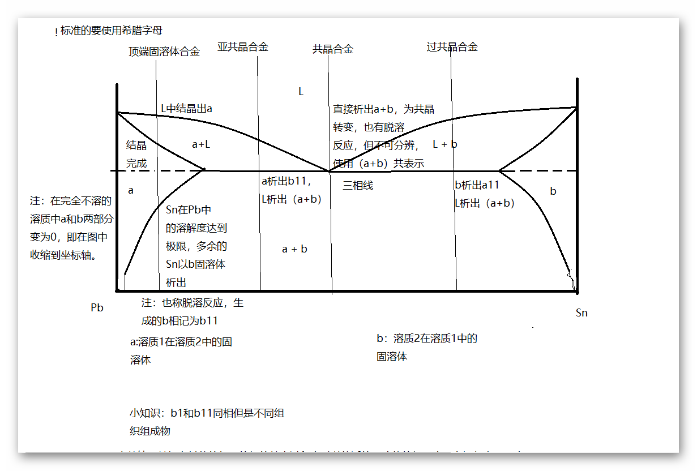

| 半导体材料 | |
目录： 第一章之相图 第二章之晶体生长 第三章之硅和锗的制备 第四章之材料基本性质 第五章之区熔提纯 第六章之杂质与缺陷 第七章之硅的外延生长 第八章之Ⅲ-Ⅴ化合物 第九章之Ⅱ-Ⅵ化合物 返回页： 类似页： |
相图：1、简介相，具有相同成分、结构和性质的均匀部分，不同的相之间有明显的分界面。常见的相有固液气三相。等离子体也算一种。 相图，就是表征相之间的转化关系的图。 2、基本概念组元：组成一个体系的基本单元。 相律：组元数，相数和自由度数间的关系 f=c-p+2 自由度数：不改变相数的条件下的自变量的个数（可以理解为维数） 单元相图：只有一个组员的相图 二元相图：有两个组员的相图 3、二元相图二元相图的表示方法是以组元的成分（使用质量分数或摩尔分数表示） 作为x变量，温度作为y变量实现相的描述 4、杠杆定律其实前面那么多都是概念，真正的重点还是如何根据杠杆定律来求解各个点的组分的含量。 5、固溶体固溶体，以一个组元为溶剂，在其晶体中溶入其他的组元。 无限胡蓉形成匀晶相图 有限互溶形成共晶相图、包晶相图 具体的原子理论主要是晶格的类型相同或不同导致高的或低的固溶度 间隙固溶体也是有限固溶体。 具体的固溶度的影响因素有：价电子数，原子数，溶质原子百分数，溶质原子价，溶剂原子价。 6、匀晶相图在两组元在液态和固态下无限互溶，形成的相图为匀晶相图 和合金的相图相同，在介绍杠杆定律时使用过。 7、共晶相图 大概的知识点和过程如图所示，利用杠杆定律解决具体的问题就不说了。 8、包晶相图将L+b倒置到三相线下面。具体的过程和共晶相图类似。 |